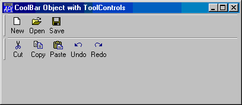
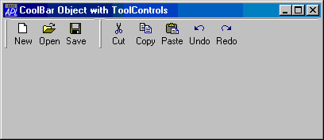
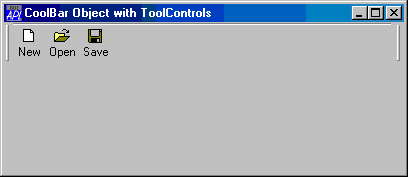
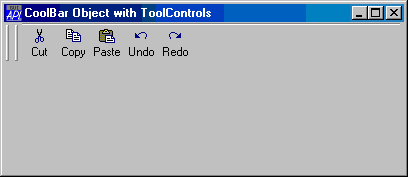
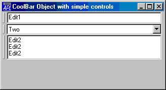

| Parents | Children | Properties | Methods | Events |
| Purpose: | The CoolBar object acts as a container for CoolBand objects. |
Description
The CoolBar and CoolBand objects provide an interface to Windows Rebar Controls
A CoolBar contains one or more bands (CoolBand objects). Each band can have any combination of a gripper bar, a bitmap, a text label, and a single child object.
Using the gripper bars, the user may drag bands from one row to another, resize bands in the same row, and maximise or minimise bands in a row.
The following example illustrates a CoolBar containing 2 CoolBands each of which is displaying a ToolControl object.
'F'⎕WC'Form' 'CoolBar Object with ToolControls'('Size' 25 50)
'F.IL'⎕WC'ImageList'('Masked' 0)('MapCols' 1)
'F.IL.'⎕WC'Bitmap'('ComCtl32' 120)⍝ STD_SMALL
'F.CB'⎕WC'CoolBar'
:With 'F.CB.C1'⎕WC'CoolBand'
'TB'⎕WC'ToolControl'('ImageListObj' '#.F.IL')
'TB.B1'⎕WC'ToolButton' 'New'('ImageIndex' 7)
'TB.B2'⎕WC'ToolButton' 'Open'('ImageIndex' 8)
'TB.B3'⎕WC'ToolButton' 'Save'('ImageIndex' 9)
:EndWith
:With 'F.CB.C2'⎕WC'CoolBand'
'TB'⎕WC'ToolControl'('ImageListObj' '#.F.IL')
'TB.B1'⎕WC'ToolButton' 'Cut'('ImageIndex' 1)
'TB.B2'⎕WC'ToolButton' 'Copy'('ImageIndex' 2)
'TB.B3'⎕WC'ToolButton' 'Paste'('ImageIndex' 3)
'TB.B4'⎕WC'ToolButton' 'Undo'('ImageIndex' 4)
'TB.B5'⎕WC'ToolButton' 'Redo'('ImageIndex' 5)
:EndWith
The CoolBar allows the user to organise the CoolBands within it as required. The next three pictures illustrate this feature.

after user has moved band 2 into row 1

after user has maximised band 1

after user has maximised band 2
The second example illustrates a CoolBar containing 3 CoolBands displaying an Edit, Combo and multi-line Edit respectively.
'F'⎕WC'Form' 'CoolBar Object with simple controls'('Size' 25 40)
'F'⎕WS'Coord' 'Pixel'
'F.CB'⎕WC'CoolBar'
:With 'F.CB.C1'⎕WC'CoolBand'
'E1'⎕WC'Edit' 'Edit1'
:EndWith
:With 'F.CB.C2'⎕WC'CoolBand'
'C1'⎕WC'Combo'('One' 'Two' 'Three')('SelItems' 0 1 0)
:EndWith
:With 'F.CB.C3'⎕WC'CoolBand'
'E2'⎕WC'Edit'(3 5⍴'Edit2')('Style' 'Multi')
:EndWith
The VariableHeight property specifies whether or not the CoolBar displays bands in different rows at the minimum required height (the default), or all the same height.
The BandBorders property specifies whether or not narrow lines are drawn to separate adjacent bands. The default is 0 (no lines).
The DblClickToggle property specifies whether or not the user must single-click (the default) or double-click to toggle a child CoolBand between its maximised and minimised state.
The FixedOrder property specifies whether or not the CoolBar displays CoolBands in the same order. If FixedOrder is 1, the user may move bands to different rows, but the band order is static. The default is 0. Note that when the user moves a CoolBand within a CoolBar, its Index and (potentially) NewLine properties will change to reflect its new position.
If you wish to display pictures in one or more of the CoolBands owned by a CoolBar, you do so by setting the ImageListObj property to the name of an ImageList object which contains the pictures. Pictures are allocated to individual CoolBands via their ImageIndex properties.